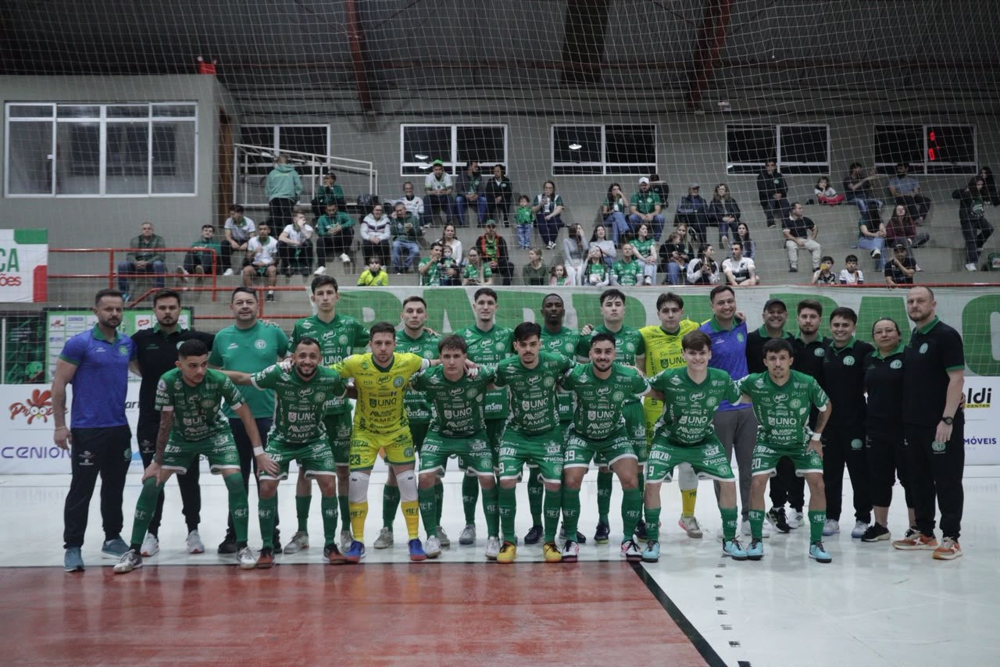

A Prefeitura de Chapecó/Chapecoense/Unochapecó continua na luta pelo título da Copa Santa Catarina de Futsal. Na noite desta quarta-feira (30), o Verdão das Quadras voltou a vencer o Rio do Sul, desta vez em casa, por 5 a 2, no Ginásio Plínio Arlindo De Nes (SER Aurora). O placar agregado das quartas de final foi 8 a 3 (3 a 1 na ida).
Apesar da vantagem do empate, a Chape Futsal queria a vitória e abriu o caminho do triunfo aos 4’35”. O artilheiro Kassula chutou rasteiro, de fora da área, e acertou o canto. O time do Alto Vale do Itajaí precisava ganhar no tempo normal e tratou de reagir. Aos 15’04”, Igor girou dentro da área e bateu para igualar o marcador. O primeiro tempo terminou empatado.

Os anfitriões foram surpreendidos no início da segunda etapa. Aos 30 segundos, Joãozinho recebeu passe na área, escorou para a rede e virou a contagem, mas a alegria durou pouco. A 1’27”, os visitantes erraram na saída de bola, e Davi, na própria interceptação, mandou para o gol. E, aos 9’35”, nova virada: João Camilo pegou o rebote para fazer o terceiro tento verde-branco.
O resultado era bom, mas a Chape Futsal não diminuía o ritmo. Aos 16’15”, em lance de contra-ataque, Nogueira concluiu no canto para aumentar: 4 a 2. O quinto saiu aos 18’33”: Igor tentou cortar lançamento e fez gol contra, fechando a conta.

O confronto com o Rio do Sul foi o 16º da Chapecoense no mês de setembro. A soma compreende partidas pelo Campeonato Brasileiro, Copa Sul (onde foi vice-campeã), Catarinense Série Ouro, Copa SC e regional dos JASC. Agora, o time do técnico Leo Schroeder aguarda o classificado de Criciúma x Pinhalense. O duelo de ida, em Pinhalzinho, terminou 3 a 3. A volta será no Sul do Estado, no dia 14 de outubro, às 19h30.
Fotos: Roger Silva/Chape Futsal